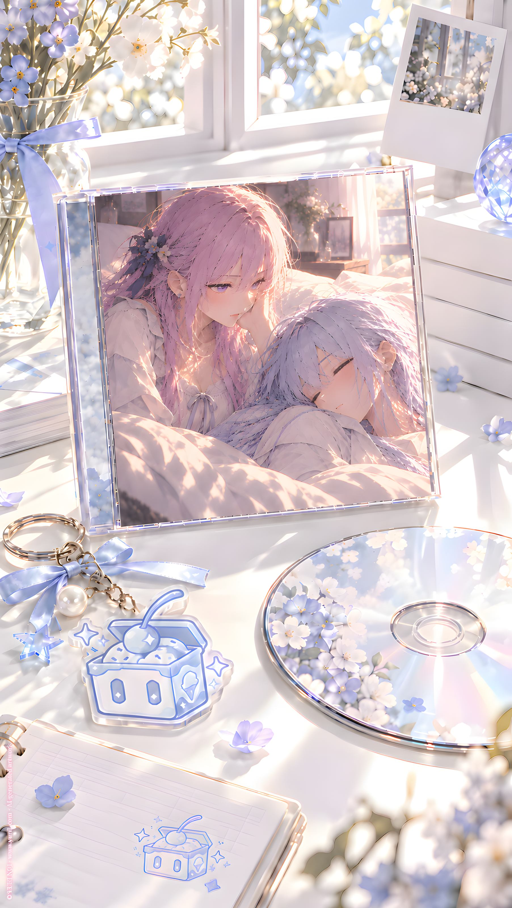

ORIGINAL TRACK ／ YURI NO1
10 でも結局、恋って何？
Icy & Arte · Mini Album Vol.1
Lyrics · Base Script
[Intro — Room Tone]
[Duet — Soft]
ただいま
おかえり
長い一日が
終わった
録音も
物語も
全部
終わった
[Pause]
でも
ひとつだけ
終わらない
[Whisper]
恋って
何？
[Verse 1 — Solo]
録音室には
いくつもの声
いくつもの名前
いくつもの私
冷たい声
強い声
少し甘い声
遠い未来の声
本の中を歩く声
世界を残そうとする声
[Second Solo]
どれも違って
どれも似てる
女の子を見て
気になって
近づいて
迷って
離れて
また
振り返る
[Duet]
みんな
同じことを
考えてた
好きって
何？
[Chorus — Duet]
恋って
結局なんなの？
会いたいこと？
触れたいこと？
隣にいたいこと？
少し困ること？
少し嬉しいこと？
わからないまま
また
考えること？
[Verse 2 — Solo]
帰った部屋には
いつもの明かり
いつもの椅子
いつもの声
冷蔵庫には
アイスクリーム
[Second Solo]
ひとつ
ふたつ
違う味
同じスプーン
冷たい
甘い
少し苦い
少し酸っぱい
[Duet — Light]
全部違う
でも
全部
アイスクリーム
[Pause]
……
なるほど
[Pre-Chorus — Alternating]
説明できなくても
いい
理由がなくても
いい
昨日と今日で
少し違っても
いい
それでも
好きなら
好き
[Chorus — Duet]
恋って
アイスクリームみたい
甘い日もある
苦い日もある
溶ける日もある
欲しくなる日もある
好きな味は
みんな違う
でも
名前は
同じ
[Bridge — Solo]
一曲目では
考えてた
どうしてアイスは
美味しい？
温度？
甘さ？
溶ける速さ？
[Second Solo]
最後まで
考えた
でも
答えは
たぶん
もっと
簡単
[Duet — Soft]
好きだから
食べる
好きだから
そばにいる
それだけで
いいのかもしれない
[Final Chorus — Duet]
恋って
結局なんなの？
まだ
ちゃんとは
わからない
でも
帰る場所があって
隣に誰かがいて
同じアイスを食べて
もう少しだけ
近くにいたい
そう思うなら
それを
恋って呼んでも
いいのかもしれない
[Outro — Alternating / Free Assignment]
アイス
食べる？
食べる
何味？
同じのでいい
珍しい
今日は
同じがいい
[Pause]
一口いる？
いる
[Soft Humming]
んー……
[Pause]
恋って
アイスみたいだね
今さら？
……
うるさい
[Pause]
もう一口
自分のがあるでしょ
……
じゃあ
キスは？
[Silence]
え？
[Duet — Soft Whisper]
そっちなら
同じ味
YURI NO1 Music \ https://music.yuri1.com